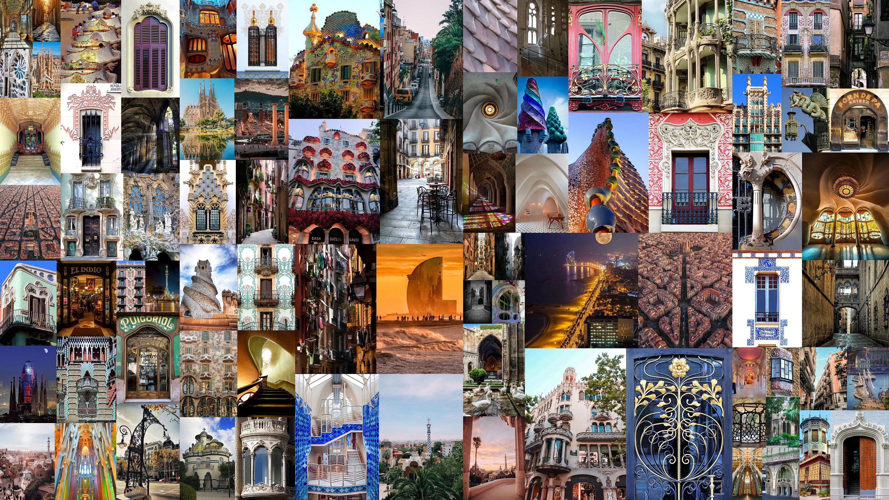

Page author: Маєвська Валерія ІМ-41

Spain is famous for its diverse architectural styles, including Gothic, Islamic, and Modernism. Many Spanish buildings are considered masterpieces of world heritage.
Spanish architecture is a rich blend of cultures and eras. It began with Roman and Visigoth foundations, then flourished under the Moors, who introduced intricate arches, courtyards, and decorative patterns, as seen in the Alhambra. After the Reconquista, Gothic cathedrals like the Barcelona Cathedral combined European styles with local traditions, while the Renaissance and Baroque added grandeur and ornamentation. In the 19th–20th centuries, Modernisme, led by Antoni Gaudí, brought organic shapes and imaginative designs, exemplified by the Sagrada Familia. Across Spain, architecture reflects a layering of history, culture, and regional identity, from medieval stone churches to vibrant, modernist masterpieces.
Here's a quick summary:
My personal favorite is Casa Batlló, which is also the work of Antoni Gaudí. I especially love its roof, because it resembles a dragon.
Go to a specific section of modernism page to read about the roof: The roof of Casa Batlló
Read more about Antoni Gaudí on Wikipedia
The Renaissance and Baroque eras later introduced grandeur, ornate facades, and dramatic interiors, reflecting both Spain’s imperial power and the influence of the Catholic Church. Then came Modernisme in the late 19th and early 20th centuries, a uniquely Spanish form of Art Nouveau led by Antoni Gaudí, whose work, especially the Sagrada Familia, fused organic forms, bright colors, and expressive structures that broke traditional rules. Beyond these monumental styles, regional and vernacular architecture—whitewashed Andalusian villages, stone farmhouses in the north, and Mediterranean coastal homes—demonstrates how climate, materials, and daily life shaped building traditions. In Spain, every building is a dialogue between past and present, showing how conquest, faith, and creativity have sculpted its cities and landscapes over time.